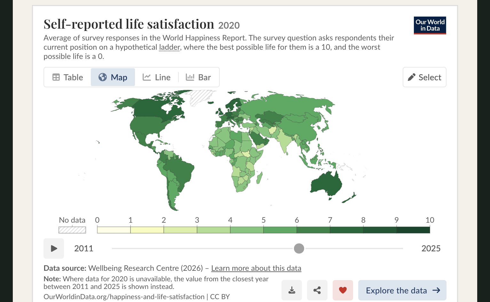
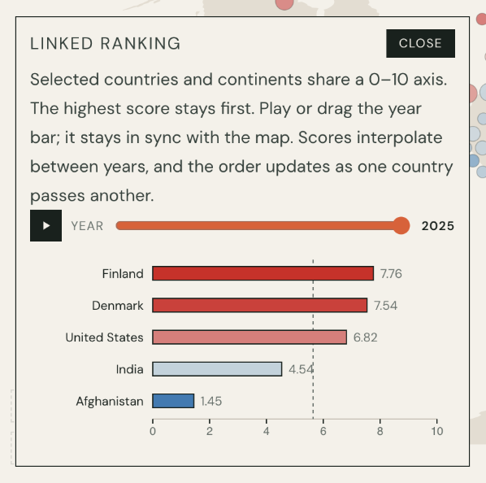
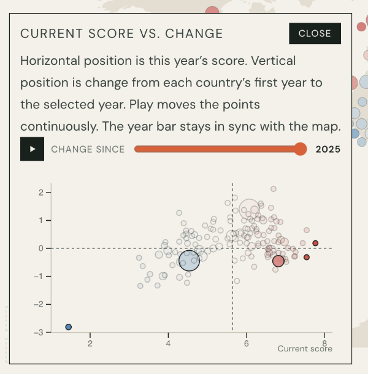
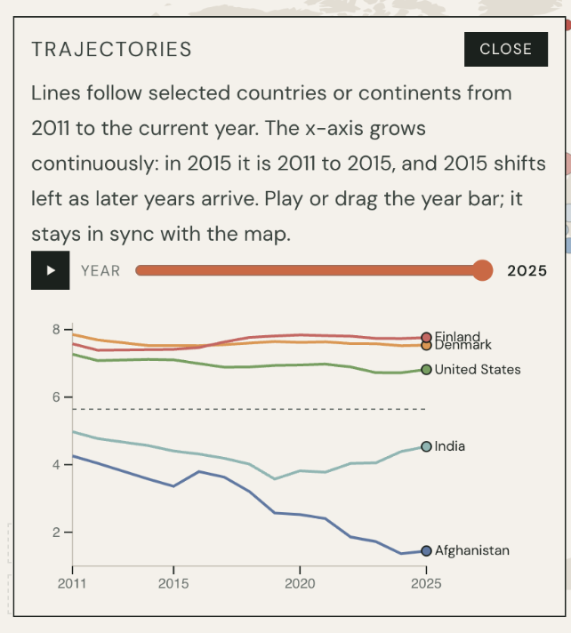
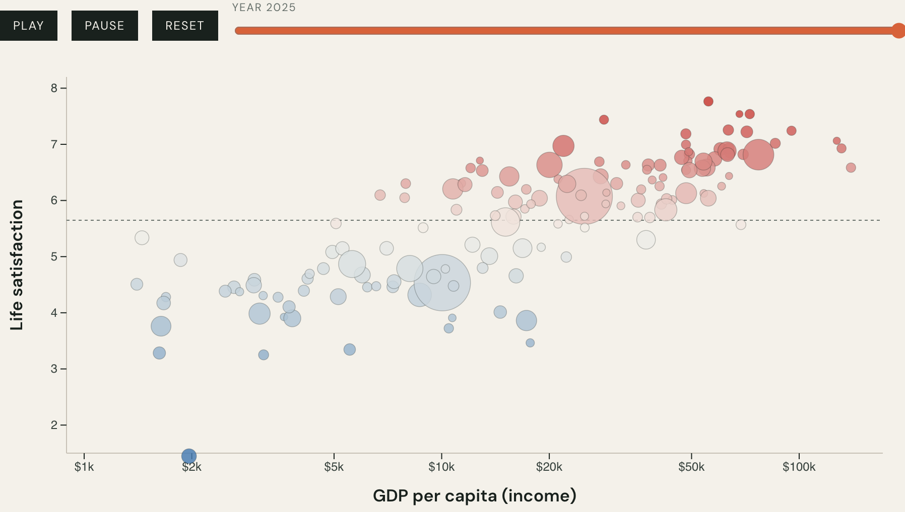

Individual Project · Written Report
Critique and
Redesign.
Visualization Critique and Redesign: Self-Reported Life Satisfaction.
Visualization Critique and Redesign: Self-Reported Life Satisfaction
Original Visualization and Context
The original visualization I chose is the Self-reported Life Satisfaction map from Our World in Data. This map uses data from the World Happiness Report 2026. It shows life satisfaction by country measured with the Cantril Ladder on a scale from 0 to 10.
The Self-reported Life Satisfaction map is a choropleth map. In a choropleth map each spatial region is filled with a color that represents a measured attribute. In this Self-reported Life Satisfaction map countries are the marks. Geographic position shows where each country lies and color displays each country’s life satisfaction score.

The intended message is to show how life satisfaction changes across places and over time. The Self-reported Life Satisfaction map is aimed at an audience. This audience includes the public, students, researchers, journalists and policymakers. After studying the map tasks in class users should be able to locate countries see attributes linked to locations and compare attributes across locations.
In this case viewers can identify countries with high or low life satisfaction recognize regional patterns and explore different years.
Critique
The original visualization has three main strengths. First, the choropleth idiom provides an effective global overview, as geographic position and sequential color make broad spatial patterns and regional clusters easy to recognize. This matches the advantage of choropleth maps discussed in class: they allow viewers to understand large amounts of geographic data quickly. Second, hover, country selection, and the timeline support exploration across countries and time without displaying all information at once. Third, these interactions create an effective overview–filter–details-on-demand workflow: users first see the global distribution, filter by year, and then inspect individual countries for exact values.
First, color is less effective for precise quantitative comparison. Similar life satisfaction values produce similar colors, making small differences difficult to judge. This reflects a limitation of choropleth maps discussed in class: they are more effective for showing generalized geographic patterns than specific numerical values.
Second, geographic area creates unnecessary visual prominence. Large countries such as Russia and Canada occupy much more visual space than geographically small countries, although land area is unrelated to happiness. This can draw attention away from small countries even when they have important or extreme values.
Third, temporal change is difficult to compare directly. Although users can select different years, each selection replaces the previous state. Users must remember earlier colors and values to determine whether a country has improved or declined, making the direction and magnitude of change difficult to perceive.
Finally, the relationship between income and happiness is not directly visible. Income can be used to filter countries, but filtering does not show how income and life satisfaction vary together across countries. A separate quantitative view is needed to make this relationship visually comparable.
Redesign Rationale

My first redesign decision is to use a blue–neutral–red diverging color scale, centered on the global average for the selected year. Blue indicates below-average happiness and red indicates above-average happiness. This gives color a clearer semantic reference. I also add a linked ranking view, where selected countries are positioned on a common quantitative axis. This uses position for precise comparison while retaining color for overview and pattern recognition.
Second, I replace the choropleth with a Dorling-style proportional symbol representation. Each country becomes a circle located approximately according to geography, while circle area represents population and color continues to represent happiness. The course describes proportional symbol maps as varying symbol size according to the magnitude of a variable and notes that they can encode additional attributes through color. This replaces meaningless land-area prominence with population, a meaningful contextual variable. An income-group filter further allows users to explore countries with similar economic conditions.
Third, I add coordinated change and trajectory views. Instead of requiring users to remember previous map states, these views directly encode the direction and magnitude of happiness change. Users can therefore identify countries that are improving, declining, or remaining stable and compare their trajectories across time.



At first, related views were placed below the main map, so users had to scroll and could not easily compare them with the map at the same time. In my redesign, I turn three of these views into lightweight floating notes that can be opened together and freely dragged around the page. Because they remain mostly hidden until requested, they do not add much visual complexity to the default view. The main map keeps discrete year-by-year transitions, because distinct color changes make differences in happiness levels between years easier to notice. In contrast, the notes use continuous animated transitions because movement itself communicates change. In the ranking view, users can directly see when a country moves above or below another country and how far its position changes. In the score-versus-change view, the distance and direction of a point’s movement reveal the magnitude and direction of change. In the trajectory view, continuous paths make the overall direction and pattern of change across multiple years easier to follow. This division allows the map to emphasize state, while the notes emphasize movement and change. Users can decide which notes to open and arrange them for their own comparisons. The “Show” list on the right further simplifies interaction by collecting the available views and filters in one place. All selections are linked, so changes to the year, country selection, or filter update all relevant views simultaneously.
I also include a GDP per capita versus life satisfaction scatterplot, with position encoding GDP and happiness and circle area encoding population. This provides a direct way to explore the relationship between economic conditions and life satisfaction.

Original vs. Redesign
The original choropleth is simpler and preserves exact geographic shapes, making it effective for quickly identifying broad spatial patterns. The redesign sacrifices some geographic fidelity, and proportional symbols may overlap, a disadvantage also noted in the course material. Another trade-off is that the redesign relies more heavily on user interaction. To keep the main view uncluttered, detailed comparisons, trajectories, and change views remain hidden until users actively open the floating notes, so some insights are not immediately visible at first glance. In addition, the redesign separates the analysis into two main visualizations, which are the happiness map and the GDP–happiness scatterplot. This separation keeps each view focused, but users must move between them to explore geographic patterns and the relationship between income and happiness.
However, once users interact with the visualization, they can perform a wider range of analytical tasks: precisely compare countries, interpret population alongside happiness, identify temporal changes without relying on memory, filter by income, and examine the relationship between GDP and happiness. The redesign therefore trades some immediate visibility and simplicity for greater user control, comparison accuracy, temporal analysis, and multivariate exploration.
References
- Our World in Data. (n.d.). Self-reported life satisfaction [Interactive visualization]. https://ourworldindata.org/grapher/happiness-cantril-ladder
- Wellbeing Research Centre. (2026). World Happiness Report 2026. Gallup World Poll. https://www.worldhappiness.report/ed/2026/
- Our World in Data. Happiness series: happiness-cantril-ladder.csv. Population: population. Income groups: world-bank-income-groups. GDP per capita: gdp-per-capita-worldbank.
- Gavin Rehkemper. Country centroids. gavinr/world-countries-centroids.